1. Inspiration II (1931)
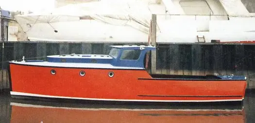
Type: Motor Yacht
Length: 30 ft
Dunkirk: Yes
History: One of the smallest Little Ships at 30ft, built by Osborne. Participated in the Dunkirk evacuation, later restored and preserved in her original white hull.
Exploring the legacy of one of Britain's most revered wooden boatbuilders.
William Osborne Ltd, established in Littlehampton on the south coast of England, became one of the most respected names in British boatbuilding throughout the 20th century. Renowned for their craftsmanship, attention to detail, and elegant design, Osborne boats served a range of purposes—from luxurious private cruising to vital military service. Their vessels were often characterised by classic lines, durable timber construction, and thoughtful layouts tailored to the needs of discerning clients.
William Osborne began operations in the early 20th century, focusing initially on traditional wooden boats. By the interwar period, the company had developed a reputation for motor cruisers of outstanding quality. Their shipyard in Littlehampton, West Sussex, became a hub of both innovation and traditional craftsmanship.
During the Second World War, the Admiralty commissioned Osborne to build fast launches, tenders, and other utility craft. This wartime production expanded the company’s technical capabilities and influence, establishing it as a serious naval contractor. Many of these vessels were later decommissioned and converted for private use, remaining afloat today as testament to their robust design.
From the 1930s through to the 1960s, William Osborne produced a distinctive line of semi-production cruisers named after birds—typically birds of prey or agile flyers—reflecting the elegance and performance of these motor yachts.
During and after WWII, Osborne constructed vessels for the Royal Navy and Royal Air Force, including:
These vessels featured robust timber construction, reinforced frames, and practical layouts. While some were built to Admiralty standards, others were custom designs tailored to operational needs.
Osborne maintained a productive relationship with Thornycroft, a respected British marine engineering firm. This collaboration enhanced Osborne’s builds through shared expertise:
William Osborne also built bespoke yachts tailored to specific owners’ needs. These were usually:
Later, the company experimented with GRP (glass-reinforced plastic) hulls, though only a handful were completed before the firm ceased operations in the 1970s.
Today, William Osborne boats are regarded as treasured examples of British maritime heritage. Many are maintained by dedicated private owners, maritime trusts, and historical societies. A number have earned places on the National Historic Ships Register and the Association of Dunkirk Little Ships. Their elegance, durability, and historic significance ensure that Osborne vessels remain icons of classic yacht design.
The Gerfalcon holds a distinguished place in British maritime history as a product of William Osborne Ltd., one of the country’s most respected yacht and motor cruiser builders. Based in Littlehampton, West Sussex, Osborne’s shipyard was renowned for its quality craftsmanship and pioneering designs throughout the early to mid-20th century.
From archival issues of The Motor Boat magazine dated 1937 and 1938, it is evident that William Osborne Ltd. was at the forefront of small cruiser innovation during the interwar period. These publications document the launch of the Osborne Falcon Junior, a twin-engined 33-ft. 6-in. cruiser, built of English oak and Columbian pine, and powered by Morris Navigator petrol engines—characteristics that closely match those originally found in Gerfalcon.
A detailed entry in the 24 September 1937 edition of The Motor Boat highlights the design's key features: a self-draining cockpit, a forward cabin layout, dual 12–24 h.p. engines, and modern amenities for its time. The Falcon Junior was designed to accommodate four passengers with considerable comfort, offering modern streamlining, dedicated galley facilities, and finely constructed interior spaces—testament to Osborne’s vision for luxury and functionality on the water.
An accompanying photograph from 18 March 1938 shows cruisers under construction at the Osborne yard, further reinforcing Gerfalcon’s provenance. Though William Osborne Ltd. no longer holds records of the individual vessel, a letter from the director dated 28th February 1990 confirms that Gerfalcon was built in 1938 and originally fitted with Morse Navigator engines.
As stated in the letter below, the yard retains no specific documentation on the vessel. This absence of records is widely attributed to a devastating fire at the William Osborne shipyard, believed to have occurred in the mid-to-late 20th century, which resulted in the loss of many original drawings, specifications, and client archives. While the exact date of the fire is uncertain, it is a known and lamented event among historians and former employees alike.
Today, Gerfalcon endures not only as a lovingly restored vessel but also as a living tribute to Osborne’s proud heritage and Britain’s tradition of maritime excellence.
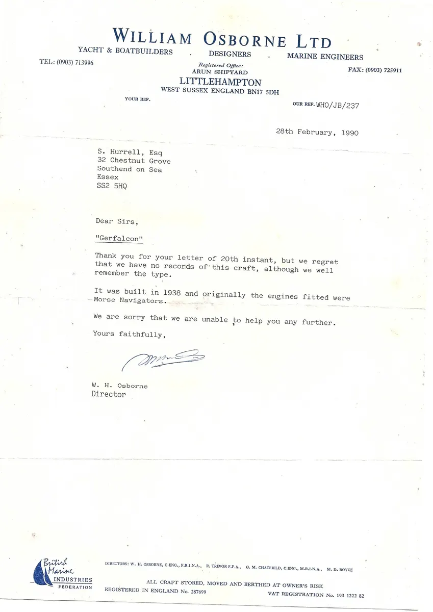


Maintaining classic wooden boats is both difficult and costly. These vessels require specialist knowledge, traditional craftsmanship, and bespoke materials—resources that are increasingly scarce. As time passes, the skills, tools, and timber required to restore and maintain these historic craft become harder to find and more expensive to employ.
This image illustrates the fate of many such boats. Despite their heritage, when neglected or lacking support, they are often left to deteriorate beyond recovery. The vessel shown has sadly been sat on the bottom of the Thames for some two years now—a stark reminder of the vulnerability of our maritime legacy.
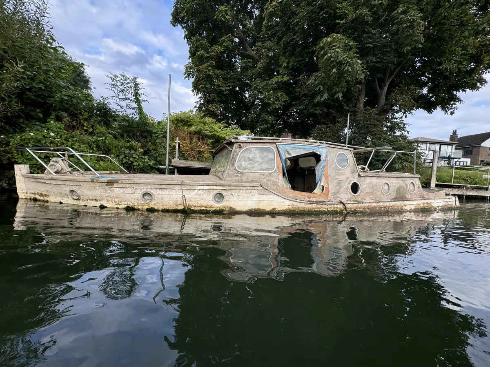
There are currently only eight known William Osborne-built vessels left on the National Historic Ships Register that were constructed before 1950.
These rare examples of pre-war and wartime craftsmanship highlight the exceptional quality and enduring legacy of Osborne’s wooden boatbuilding. Each surviving vessel stands as a testament to the yard’s attention to detail, traditional construction methods, and contribution to both private yachting and national service during a defining era of British maritime history.

Type: Motor Yacht
Length: 30 ft
Dunkirk: Yes
History: One of the smallest Little Ships at 30ft, built by Osborne. Participated in the Dunkirk evacuation, later restored and preserved in her original white hull.

Type: Motor Yacht
Length: 34 ft
Dunkirk: Yes
History: Built as a private yacht, served as RN Auxiliary patrol craft in WWII, participated in Dunkirk evacuation. Currently under restoration.
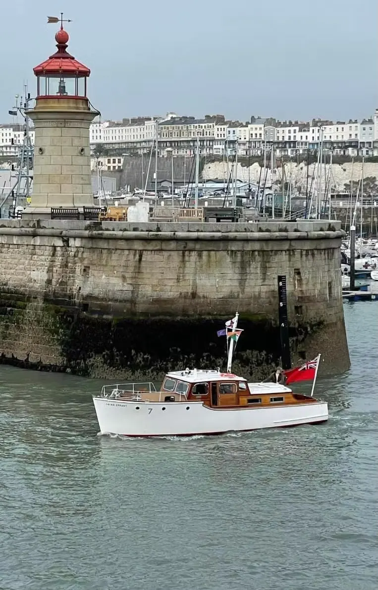
Type: Motor Yacht
Length: 32 ft
Dunkirk: Yes
History: Prototype of Osborne’s Swallow Senior class, served at Dunkirk with detailed accounts of Operation Dynamo service.
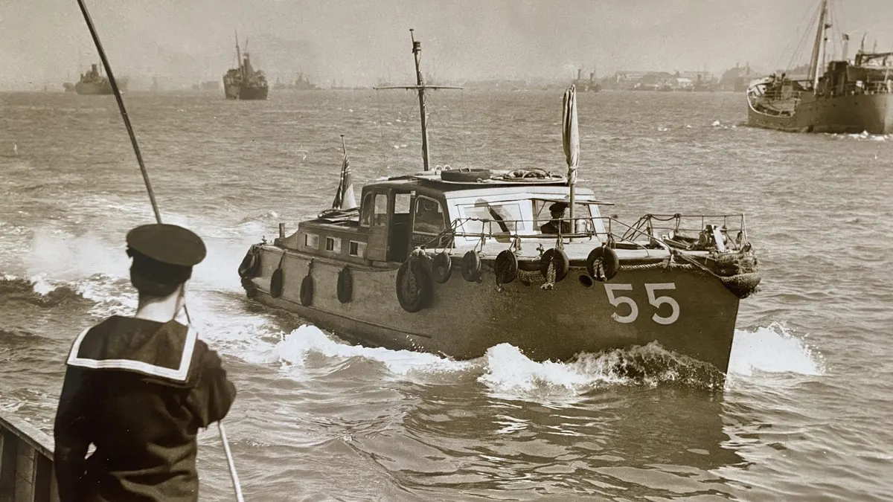
Type: Eagle Class Motor Cruiser
Length: 40 ft
Dunkirk: Yes
History: Originally launched as White Ghost II, she served as a patrol boat during WWII. Now privately maintained.
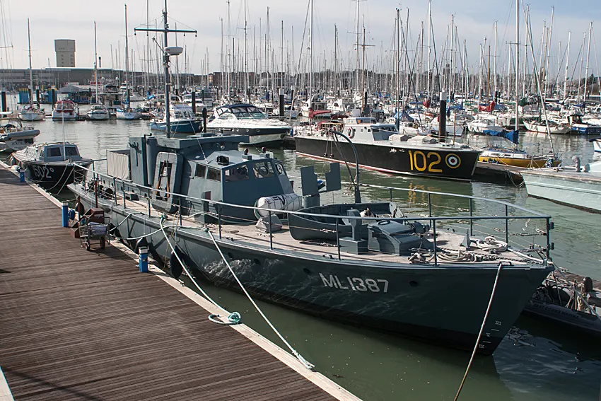
Type: Harbour Defence Motor Launch
Length: 72 ft
Dunkirk: No
History: Built in 1943 and refitted by Osborne in 1946. A D-Day veteran, now a fully operational historic vessel maintained by the Medusa Trust.
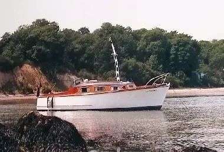
Type: Motor Yacht
Length: 26 ft
Dunkirk: No
History: A Swift Junior-class motorboat built in 1946. Restored by Alain Lamens. Not a Dunkirk Little Ship but representative of post-war Osborne craftsmanship.
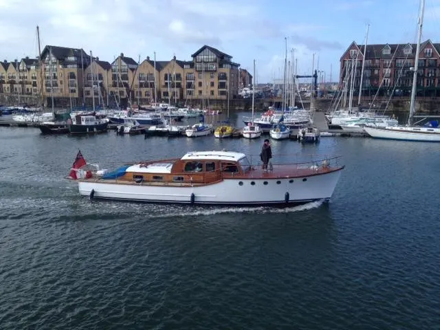
Type: Twin Screw Motor Yacht
Length: 47 ft
Dunkirk: No
History: Timber yacht, attended the 1977 Spithead Review. Restored extensively between 2008–2013.
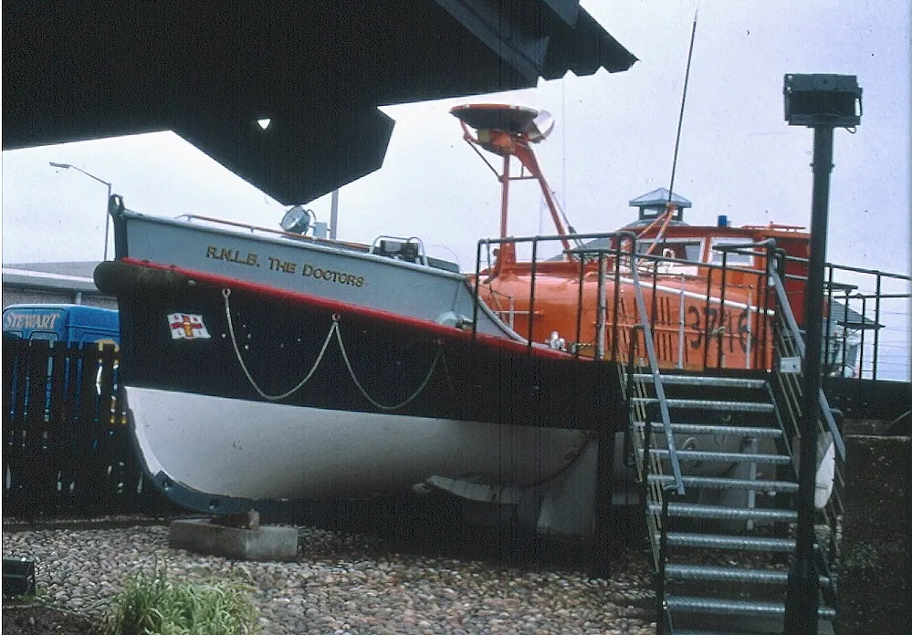
Type: Oakley Class Lifeboat
Length: 37 ft
Dunkirk: No
History: Built by Osborne in 1960, served at Anstruther from 1965. Launched 62 times and saved 21 lives.
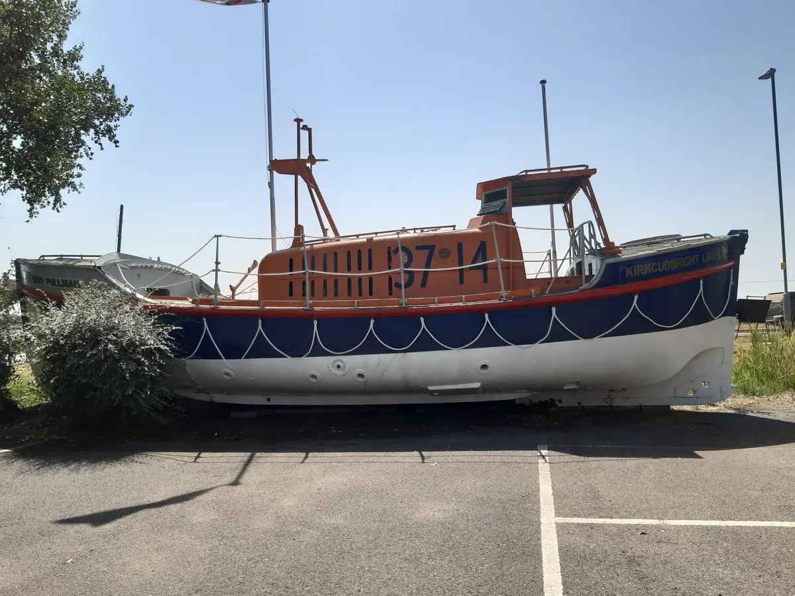
Type: Oakley Class Lifeboat
Length: 37 ft
Dunkirk: No
History: Served at Kirkcudbright 1965–1989. Launched 71 times and saved 23 lives. Now displayed at Baytree Garden Centre, Weston Spalding.
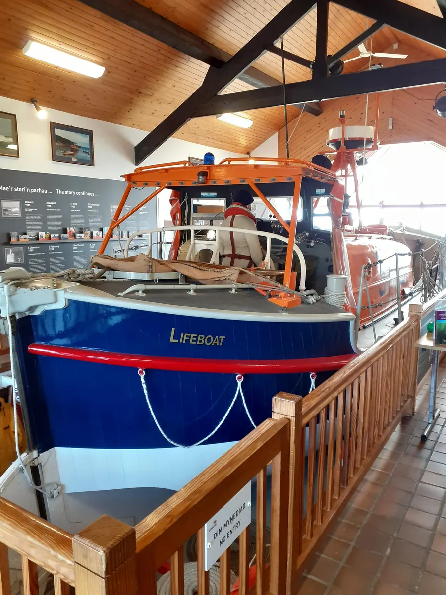
Type: Oakley Class Lifeboat
Length: 37 ft
Dunkirk: No
History: Served at New Quay, Cardigan until 1990. Launched 76 times and saved 40 lives.
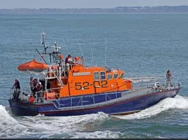
Type: Arun Class Lifeboat
Length: 52 ft
Dunkirk: No
History: Served at Guernsey (1973–1997), 500+ launches, 223 lives saved. Famous for rescuing 29 people from MV Bonita. Rededicated in 2022.
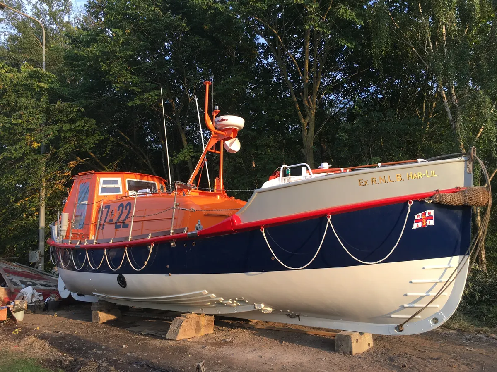
Type: Oakley Class Lifeboat
Length: 37.5 ft
Dunkirk: No
History: Built for RNLI, served at Rhyl until 1990. Multiple restorations. Currently privately owned in South Ferriby.
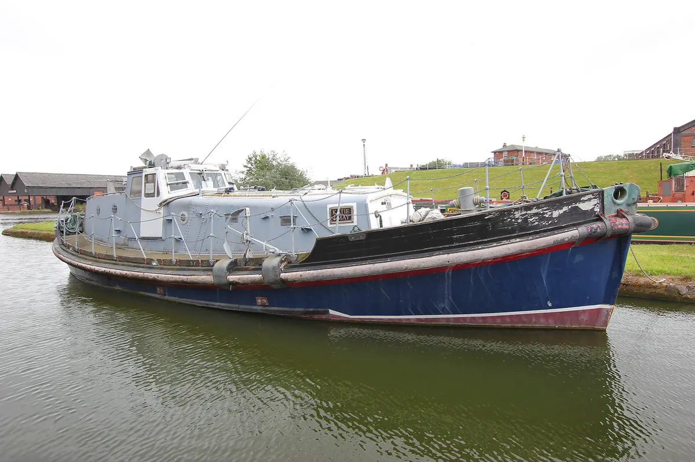
Type: Watson Class Lifeboat
Length: 47 ft
Dunkirk: No
History: A classic Osborne-built lifeboat later converted for leisure use, with traditional wooden construction and twin Gardner diesel engines.
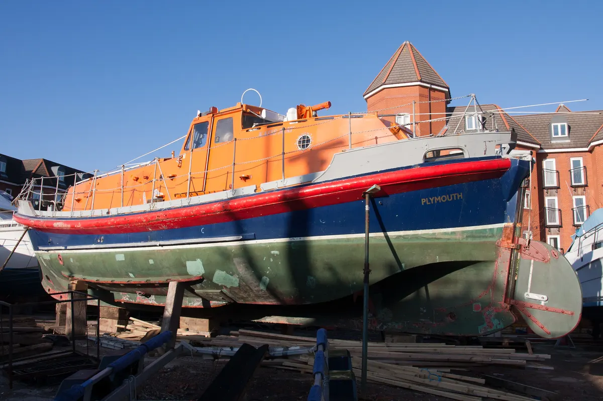
Type: Watson Class Lifeboat
Length: 47 ft
Dunkirk: No
History: A post-war Watson Class lifeboat representing Osborne's continued work on robust, practical rescue craft after the Second World War.
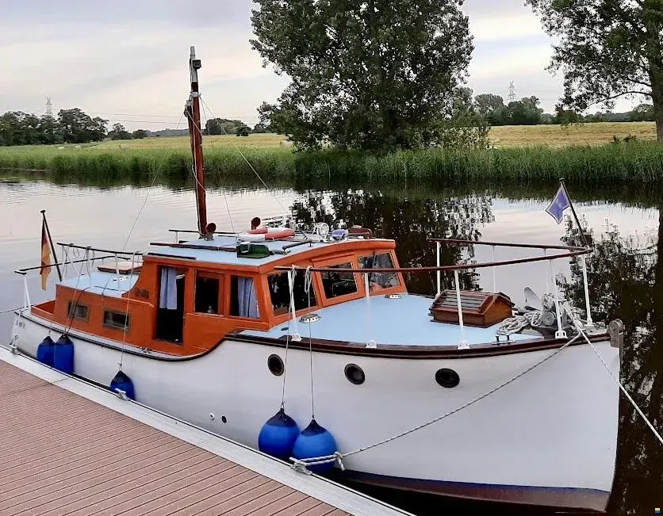
Type: Classic Motor Yacht
Length: 9.5 m
Dunkirk: No
History: A pre-war William Osborne Littlehampton motor yacht with twin Leyland diesel engines, showing the yard's elegant small-yacht craftsmanship before wartime demands transformed many similar vessels into service craft.
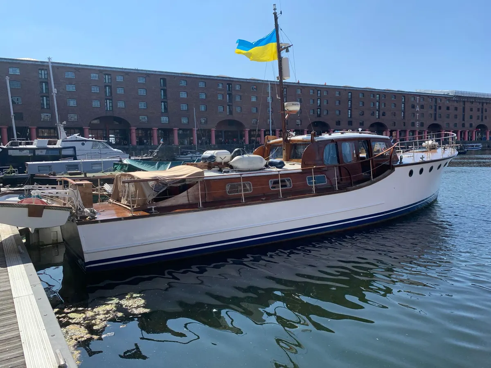
Type: Classic Motor Yacht
Length: 48 ft
Dunkirk: No
History: A 48 ft Osborne motor yacht extensively restored between 2008 and 2013, with twin Perkins engines and registration on the National Historic Ships Register.
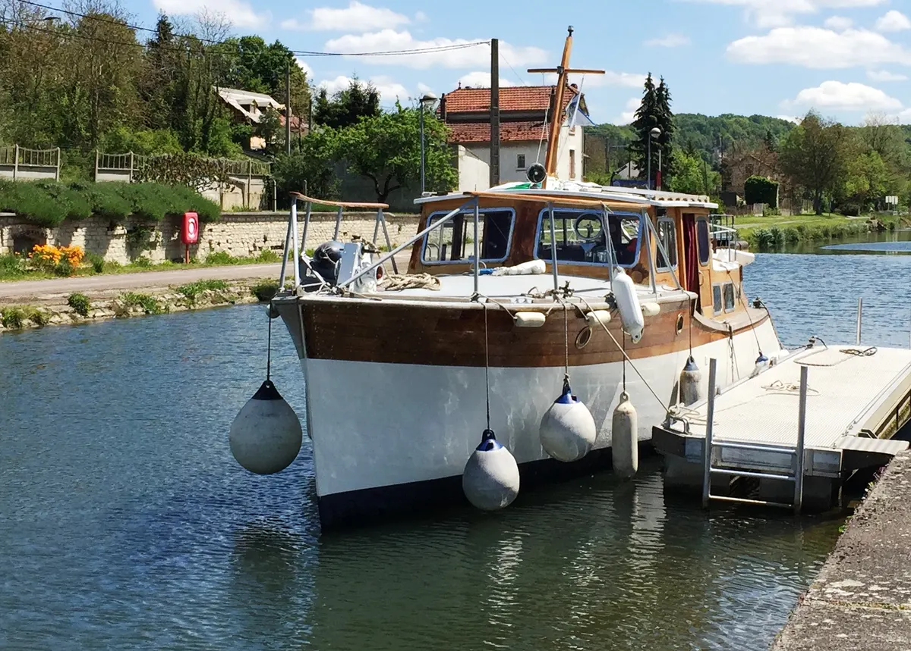
Type: Swallow Senior Class Motor Yacht
Length: 32 ft
Dunkirk: No
History: A rare pre-war Osborne Swallow Senior class motor yacht with mahogany construction, reflecting the refined small-cruiser designs that made the yard's work so valued.